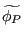
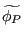
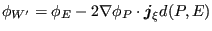
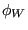
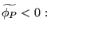
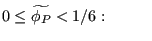
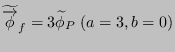
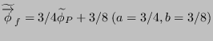
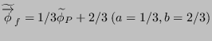
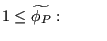

Next: Gamma Method Up: Convective interpolation Previous: Upwind scheme Contents
To remedy the problem of spurious viscosity several high resolution schemes have been invented [61]. They nearly all consist of piecewise functions of the form
where  and
and  are constants and
 and
are defined as (cf. Figure 157,
in which a regular mesh is shown):
are constants and
 and
are defined as (cf. Figure 157,
in which a regular mesh is shown):
and
Substituting Equations (510) and (511) in Equation (509) yields:
For irregular meshes element centers W, P and E may not be aligned Therefore, usually a fictituous aligned position W' is assumed such that (Figure 158):
|  | (513) |
and used in Equation (512) instead of  leading to
For the Modified Smart Scheme, which is implemented in CalculiX, the following relationships are defined:
|  |  |
(516) |
|  |  | (517) |
|  | (518) | |
|  | (519) | |
|  | |
(520) |
Notice that by using the resulting equations (514) and (515)
the convective interpolation at face e only depends on element center values
in the neighboring elements P and E. Therefore, these formulas can be used in
a completely irregular mesh. Finally, it is worth noting that if  is a
vector field (e.g. the velocity) the above formulas are applied componentwise.
is a
vector field (e.g. the velocity) the above formulas are applied componentwise.